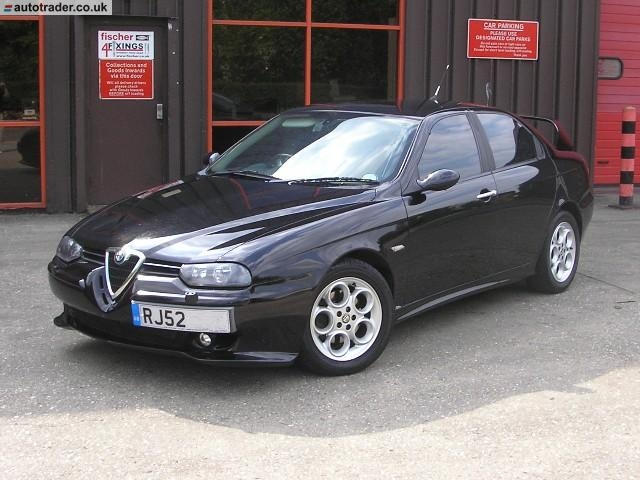
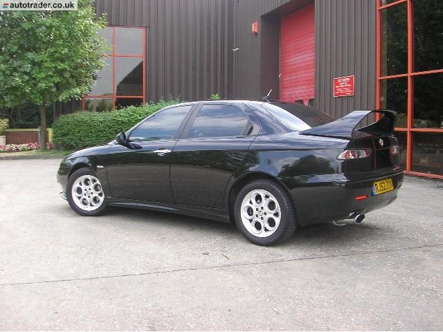
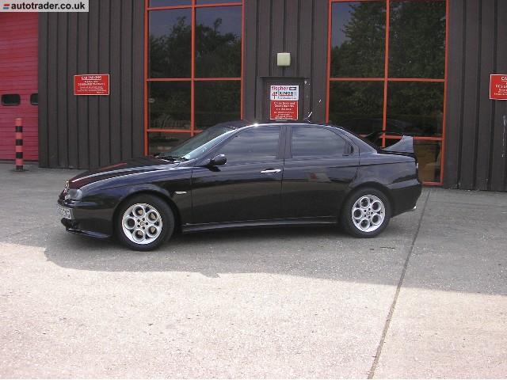
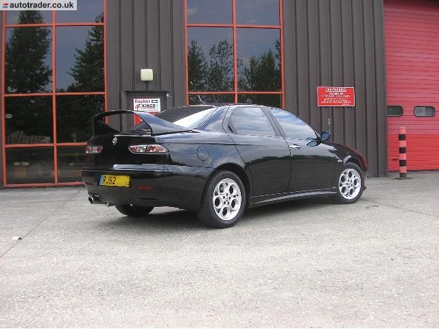
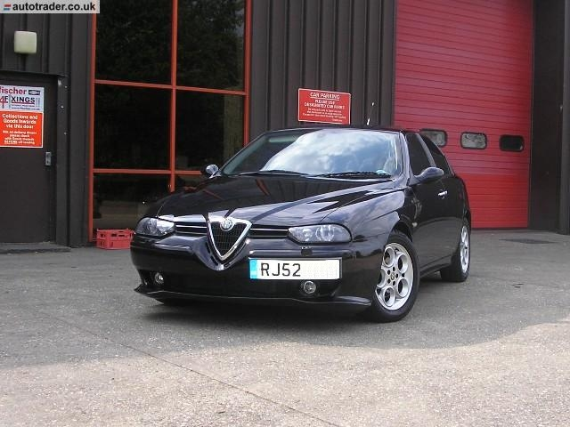
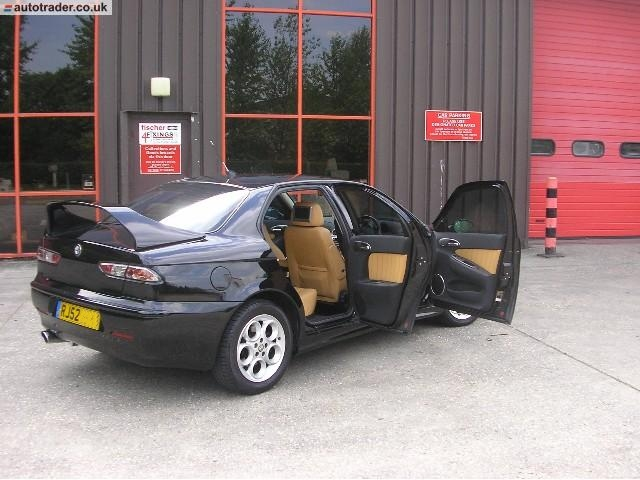
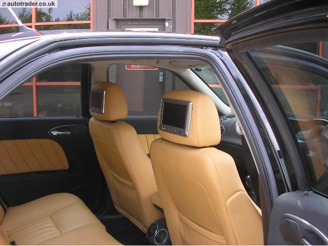
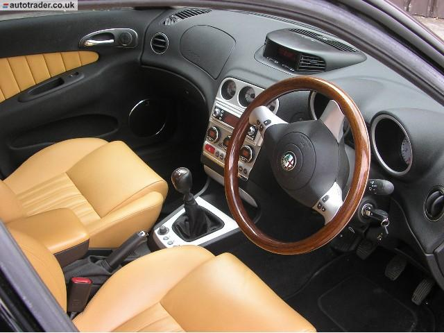
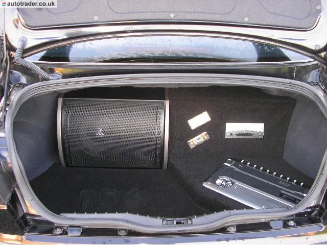

Ken O'Reilly of Fermanagh, Northern Ireland
These pictures were taken before I purchased the car but it still looks
basically the same now bar a few minor detailing points (chrome lock pins,
logoed valve caps, alloy tax disc holder, ice now has TV, DVB-TV and PS2 as
well as DVD, rear parking sensors added).
It is a 2.4 JTD regged in 2003.
CDA Carbon air filter, supersprint stainless exhaust and re-map by xtreme
motorsport to about 200bhp. Front lights are all XENON with the headlights
being the GTV style, side repeaters are crystal replacements, rear lights
are lexus style in chrome.
Front splitter has been changed but can't
remember for what exact model. Rear has been debadged bar the alfa logo
badge. Windows are lightly smoked on sides and rear. Main ICE is based about
a Blaupunkt Bremen with focal door speakers and boot mounted sub driven by a
kenwood 1000w amp. Rear ICE is a centurion DVD system with headrest screens.








Submitted: 2007
![[Prev]](bw_prev.gif)
![[Index]](bw_index.gif)
![[Next]](bw_next.gif)